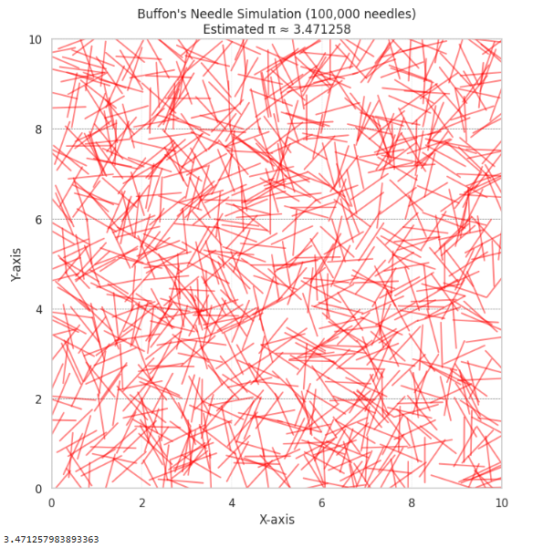

Estimating Pi Using Monte Carlo Methods
Motivation
Monte Carlo simulations use random sampling to approximate values or solve problems that may be analytically intractable. One beautiful and intuitive application of this technique is estimating the value of \(\pi\).
Two classical geometric approaches to estimating \(\pi\) using Monte Carlo methods are:
- Random Point Sampling in a Circle
- Buffon's Needle Experiment
These methods link geometry, probability, and numerical computation — demonstrating how randomness can lead to accurate estimates.
Part 1: Estimating \(\pi\) Using a Unit Circle
Theoretical Foundation
Imagine a unit circle inscribed inside a square with side length 2.
- The area of the square is \(4\) (since \(2 \times 2 = 4\)).
- The area of the circle is \(\pi r^2 = \pi\) (since \(r=1\)).
If we randomly generate points inside the square, the ratio of points falling inside the circle approximates the ratio of their areas:
\[
\frac{\text{Points in circle}}{\text{Total points}} \approx \frac{\pi}{4}
\]
So,
\[
\pi \approx 4 \times \frac{\text{Points in circle}}{\text{Total points}}
\]
Part 2: Code Implementation (Circle Method)
# Estimating Pi Using Monte Carlo - Circle Method
import numpy as np
import matplotlib.pyplot as plt
# Function to estimate pi using point sampling
def estimate_pi(num_points=10000, visualize=True):
x = np.random.uniform(-1, 1, num_points)
y = np.random.uniform(-1, 1, num_points)
distances = x**2 + y**2
inside = distances <= 1
pi_estimate = 4 * np.sum(inside) / num_points
if visualize:
plt.figure(figsize=(6, 6))
plt.scatter(x[inside], y[inside], color='skyblue', s=1, label='Inside Circle')
plt.scatter(x[~inside], y[~inside], color='salmon', s=1, label='Outside Circle')
circle = plt.Circle((0, 0), 1, color='black', fill=False, linewidth=1)
plt.gca().add_artist(circle)
plt.title(f"Monte Carlo Pi Estimation\nEstimated π ≈ {pi_estimate:.6f}")
plt.xlabel("x")
plt.ylabel("y")
plt.axis('equal')
plt.legend()
plt.show()
return pi_estimate
# Run estimation
estimate_pi(10000)

Estimating Pi Using Buffon's Needle (Improved Accuracy with 100,000 needles)
import numpy as np
import matplotlib.pyplot as plt
def buffon_pi_fixed(num_needles=100000, L=1.0, d=2.0, visualize=True):
hits = 0
centers = np.random.uniform(0, 10, size=num_needles) # y-coordinates of needle centers
angles = np.random.uniform(0, np.pi, size=num_needles) # angles in radians
for i in range(num_needles):
y_center = centers[i]
theta = angles[i]
y1 = y_center - (L / 2) * np.sin(theta)
y2 = y_center + (L / 2) * np.sin(theta)
# Check if the needle crosses a line (i.e., straddles two different "bands")
if int(y1 / d) != int(y2 / d):
hits += 1
if hits == 0:
print("No hits — increase number of needles or check logic.")
return None
pi_estimate = (2 * L * num_needles) / (d * hits)
if visualize:
plt.figure(figsize=(8, 8))
# Draw parallel lines
for y in np.arange(0, 10 + d, d):
plt.axhline(y=y, color='gray', linestyle='--', linewidth=0.5)
# Only visualize a sample of needles for clarity (e.g. 1000)
sample_size = 1000
for i in range(sample_size):
y_center = centers[i]
theta = angles[i]
x_center = np.random.uniform(0, 10)
x1 = x_center - (L / 2) * np.cos(theta)
x2 = x_center + (L / 2) * np.cos(theta)
y1 = y_center - (L / 2) * np.sin(theta)
y2 = y_center + (L / 2) * np.sin(theta)
plt.plot([x1, x2], [y1, y2], color='red', alpha=0.5)
plt.title(f"Buffon's Needle Simulation (100,000 needles)\nEstimated π ≈ {pi_estimate:.6f}")
plt.xlim(0, 10)
plt.ylim(0, 10)
plt.xlabel("X-axis")
plt.ylabel("Y-axis")
plt.gca().set_aspect('equal')
plt.grid(True, linestyle='--', linewidth=0.3)
plt.show()
return pi_estimate
# Run high-accuracy simulation
buffon_pi_fixed(num_needles=100000)
